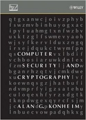

Computer Security and Cryptography (Spring 2016)
This course covers a wide range of computer security and cryptography topics, and can present these correlated topics in a well formed logic.Instructor: Zhou Peng, pzhou@shu.edu.cn, 13916123472
TA: TBD
Evaluation: Assignments (9 times), lab project (2 times), final paper exam, and attendance.
1. Assignments are now available (Due: TBD)
Assignments
Notes:
1. Put your answer into a .doc file whose name is composed of student name and ID.
2. All the answers you hand in, including comments in the source codes, should be in English.
3. Please send your solutions to the TA (email:TBD) and confirm with TA that he has received your email successfully.
Final Exam
Notes:
Students may take the final using either one of the following two options:.
Option 1: (for local students) 4th August, 3:30-5:30pm. TBD.
Option 2: (for network students) 1st - 9th August, via email.
Main Books
| Hossein Bidgoli Handbook of Information Security, 3-Volume Set, Wiley Publication |
 | Alan G. Konheim Computer Security and Cryptography Wiley Publication |
State-of-the-art Materials
1.Security top conference: IEEE S&P 2016, ACM CCS 2016, Usenix Security 2016, NDSS 2016
2. Cryptography top conference: Crypto 2016, EuroCrypt 2016, AisaCrypt 2016
3. Security Top Journal: TDSC, TIFS